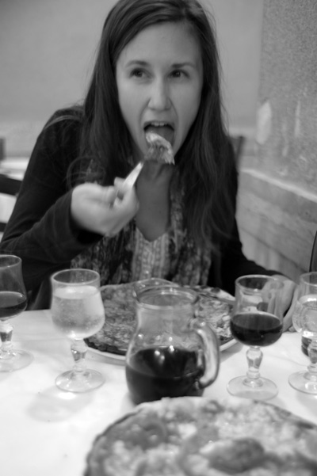

Best in Rome: Li Rioni
Finding a good pizza in Rome may be more difficult than it first appears. Pizza-pasta-pizza-pasta is everywhere! So choosing a pizzeria shouldn’t be a process easily overlooked. First off, never eat at a pizzeria with fake pizzas or pictures of pizzas. Secondly, never eat at a pizzeria without a wood-burning, stone oven. It’s best to ask if the pizzeria has one, then ask to see the oven if you don’t believe it when you’re answered yes.

Here I am, enjoying a pizza at Li Rioni. By Simon Griffee
My favorite pizzeria in Rome used to be Ai Marmi on Viale Trastevere, but the quality seems to have plummeted in the last year though I still like to go for the heady Roman atmosphere. Since I’ve stopped loving Ai Marmi’s pizza, I’ve realized my favorite pizza in Rome is so close to home that I could shout to them (if my voice were shrill enough) to stick a margherita in the oven and I’ll be down in five to pick it up.
Li Rioni, on the intersection of Via dei Santi Quattro and Via Querceti, always serves me up a consistently tasty pie, and being neighbors, Simon and I are often seated with some priority. The supplì here are the best I’ve had in the city, as are the other fritti. If I had a larger stomach I would eat more of these.
Li Rioni has just opened its doors for lunchtime, and today its wine seems to be encouraging the verbosity of a German whose voice sounds as if he were upstairs here beside me. So if you’re in the Colosseum area, take the road past Mauro’s fruit stands to devour one of the best pizze (and supplì) in Rome.
· · · · · · · · · · · · · · · · · · · ·